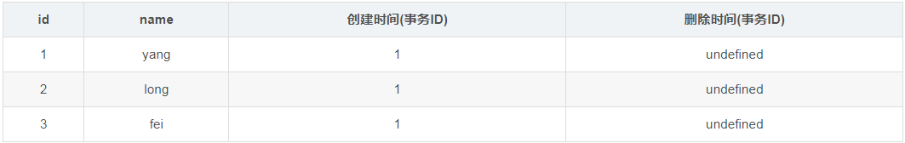
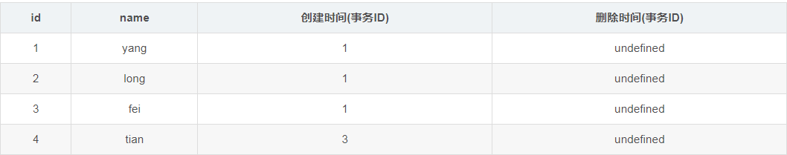
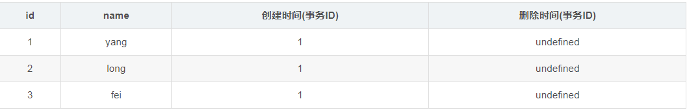
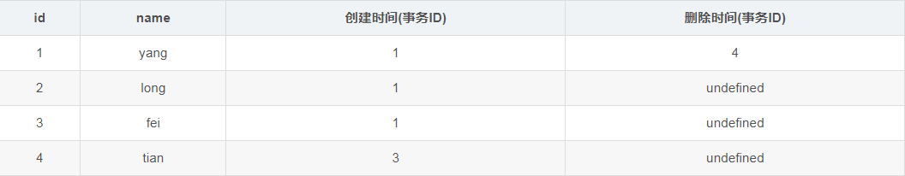
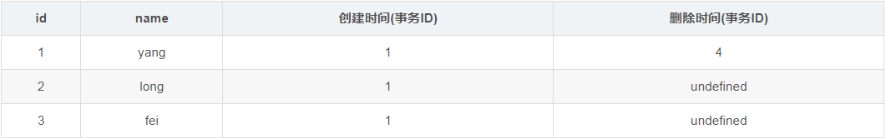
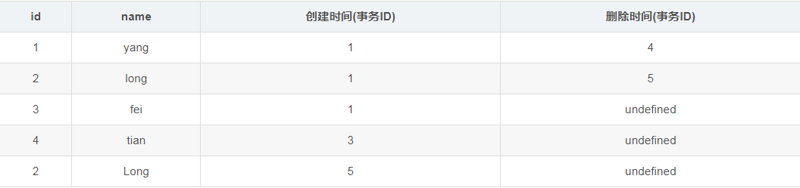
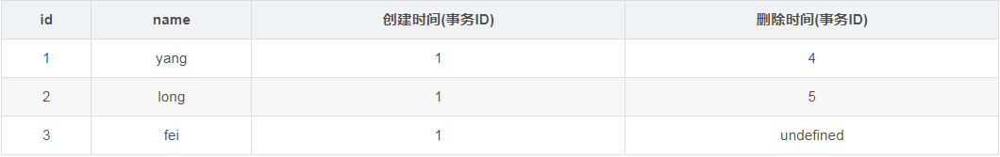

- AQS 万字图文全面解析.md.html
- Docker 镜像构建原理及源码分析.md.html
- ElasticSearch 小白从入门到精通.md.html
- JVM CPU Profiler技术原理及源码深度解析.md.html
- JVM 垃圾收集器.md.html
- JVM 面试的 30 个知识点.md.html
- Java IO 体系、线程模型大总结.md.html
- Java NIO浅析.md.html
- Java 面试题集锦（网络篇）.md.html
- Java-直接内存 DirectMemory 详解.md.html
- Java中9种常见的CMS GC问题分析与解决（上）.md.html
- Java中9种常见的CMS GC问题分析与解决（下）.md.html
- Java中的SPI.md.html
- Java中的ThreadLocal.md.html
- Java线程池实现原理及其在美团业务中的实践.md.html
- Java魔法类：Unsafe应用解析.md.html
- Kafka 源码阅读笔记.md.html
- Kafka、ActiveMQ、RabbitMQ、RocketMQ 区别以及高可用原理.md.html
- MySQL · 引擎特性 · InnoDB Buffer Pool.md.html
- MySQL · 引擎特性 · InnoDB IO子系统.md.html
- MySQL · 引擎特性 · InnoDB 事务系统.md.html
- MySQL · 引擎特性 · InnoDB 同步机制.md.html
- MySQL · 引擎特性 · InnoDB 数据页解析.md.html
- MySQL · 引擎特性 · InnoDB崩溃恢复.md.html
- MySQL · 引擎特性 · 临时表那些事儿.md.html
- MySQL 主从复制 半同步复制.md.html
- MySQL 主从复制 基于GTID复制.md.html
- MySQL 主从复制.md.html
- MySQL 事务日志(redo log和undo log).md.html
- MySQL 亿级别数据迁移实战代码分享.md.html
- MySQL 从一条数据说起-InnoDB行存储数据结构.md.html
- MySQL 地基基础：事务和锁的面纱.md.html
- MySQL 地基基础：数据字典.md.html
- MySQL 地基基础：数据库字符集.md.html
- MySQL 性能优化：碎片整理.md.html
- MySQL 故障诊断：一个 ALTER TALBE 执行了很久，你慌不慌？.md.html
- MySQL 故障诊断：如何在日志中轻松定位大事务.md.html
- MySQL 故障诊断：教你快速定位加锁的 SQL.md.html
- MySQL 日志详解.md.html
- MySQL 的半同步是什么？.md.html
- MySQL中的事务和MVCC.md.html
- MySQL事务_事务隔离级别详解.md.html
- MySQL优化：优化 select count().md.html
- MySQL共享锁、排他锁、悲观锁、乐观锁.md.html
- MySQL的MVCC（多版本并发控制）.md.html
- QingStor 对象存储架构设计及最佳实践.md.html
- RocketMQ 面试题集锦.md.html
- SnowFlake 雪花算法生成分布式 ID.md.html
- Spring Boot 2.x 结合 k8s 实现分布式微服务架构.md.html
- Spring Boot 教程：如何开发一个 starter.md.html
- Spring MVC 原理.md.html
- Spring MyBatis和Spring整合的奥秘.md.html
- Spring 帮助你更好的理解Spring循环依赖.md.html
- Spring 循环依赖及解决方式.md.html
- Spring中眼花缭乱的BeanDefinition.md.html
- Vert.x 基础入门.md.html
- eBay 的 Elasticsearch 性能调优实践.md.html
- 不可不说的Java“锁”事.md.html
- 互联网并发限流实战.md.html
- 从ReentrantLock的实现看AQS的原理及应用.md.html
- 从SpringCloud开始，聊微服务架构.md.html
- 全面了解 JDK 线程池实现原理.md.html
- 分布式一致性理论与算法.md.html
- 分布式一致性算法 Raft.md.html
- 分布式唯一 ID 解析.md.html
- 分布式链路追踪：集群管理设计.md.html
- 动态代理种类及原理，你知道多少？.md.html
- 响应式架构与 RxJava 在有赞零售的实践.md.html
- 大数据算法——布隆过滤器.md.html
- 如何优雅地记录操作日志？.md.html
- 如何设计一个亿级消息量的 IM 系统.md.html
- 异步网络模型.md.html
- 当我们在讨论CQRS时，我们在讨论些神马？.md.html
- 彻底理解 MySQL 的索引机制.md.html
- 最全的 116 道 Redis 面试题解答.md.html
- 有赞权限系统(SAM).md.html
- 有赞零售中台建设方法的探索与实践.md.html
- 服务注册与发现原理剖析（Eureka、Zookeeper、Nacos）.md.html
- 深入浅出Cache.md.html
- 深入理解 MySQL 底层实现.md.html
- 漫画讲解 git rebase VS git merge.md.html
- 生成浏览器唯一稳定 ID 的探索.md.html
- 缓存 如何保证缓存与数据库的双写一致性？.md.html
- 网易严选怎么做全链路监控的？.md.html
- 美团万亿级 KV 存储架构与实践.md.html
- 美团点评Kubernetes集群管理实践.md.html
- 美团百亿规模API网关服务Shepherd的设计与实现.md.html
- 解读《阿里巴巴 Java 开发手册》背后的思考.md.html
- 认识 MySQL 和 Redis 的数据一致性问题.md.html
- 进阶：Dockerfile 高阶使用指南及镜像优化.md.html
- 铁总在用的高性能分布式缓存计算框架 Geode.md.html
- 阿里云PolarDB及其共享存储PolarFS技术实现分析（上）.md.html
- 阿里云PolarDB及其共享存储PolarFS技术实现分析（下）.md.html
- 面试最常被问的 Java 后端题.md.html
- 领域驱动设计在互联网业务开发中的实践.md.html
- 领域驱动设计的菱形对称架构.md.html
- 高效构建 Docker 镜像的最佳实践.md.html
MySQL的MVCC（多版本并发控制）
1 什么是MVCC
MVCC全称是： **Multiversion concurrency control**，多版本并发控制，提供并发访问数据库时，对事务内读取的到的内存做处理，用来避免写操作堵塞读操作的并发问题。
举个例子，程序员A正在读数据库中某些内容，而程序员B正在给这些内容做修改（假设是在一个事务内修改，大概持续10s左右），A在这10s内 则可能看到一个不一致的数据，在B没有提交前，如何让A能够一直读到的数据都是一致的呢？
有几种处理方法，第一种： 基于锁的并发控制，程序员B开始修改数据时，给这些数据加上锁，程序员A这时再读，就发现读取不了，处于等待情况，只能等B操作完才能读数据，这保证A不会读到一个不一致的数据，但是这个会影响程序的运行效率。还有一种就是：MVCC，每个用户连接数据库时，看到的都是某一特定时刻的数据库快照，在B的事务没有提交之前，A始终读到的是某一特定时刻的数据库快照，不会读到B事务中的数据修改情况，直到B事务提交，才会读取B的修改内容。
一个支持MVCC的数据库，在更新某些数据时，并非使用新数据覆盖旧数据，而是标记旧数据是过时的，同时在其他地方新增一个数据版本。因此，同一份数据有多个版本存储，但只有一个是最新的。
MVCC提供了 时间一致性的 处理思路，在MVCC下读事务时，通常使用一个时间戳或者事务ID来确定访问哪个状态的数据库及哪些版本的数据。读事务跟写事务彼此是隔离开来的，彼此之间不会影响。假设同一份数据，既有读事务访问，又有写事务操作，实际上，写事务会新建一个新的数据版本，而读事务访问的是旧的数据版本，直到写事务提交，读事务才会访问到这个新的数据版本。
MVCC有两种实现方式，第一种实现方式是将数据记录的多个版本保存在数据库中，当这些不同版本数据不再需要时，垃圾收集器回收这些记录。这个方式被PostgreSQL和Firebird/Interbase采用，SQL Server使用的类似机制，所不同的是旧版本数据不是保存在数据库中，而保存在不同于主数据库的另外一个数据库tempdb中。第二种实现方式只在数据库保存最新版本的数据，但是会在使用undo时动态重构旧版本数据，这种方式被Oracle和MySQL/InnoDB使用。
2、InnoDB的MVCC实现机制
MVCC可以认为是行级锁的一个变种，它可以在很多情况下避免加锁操作，因此开销更低。MVCC的实现大都都实现了非阻塞的读操作，写操作也只锁定必要的行。InnoDB的MVCC实现，是通过保存数据在某个时间点的快照来实现的。一个事务，不管其执行多长时间，其内部看到的数据是一致的。也就是事务在执行的过程中不会相互影响。下面我们简述一下MVCC在InnoDB中的实现。
InnoDB的MVCC，通过在每行记录后面保存两个隐藏的列来实现：一个保存了行的创建时间，一个保存行的过期时间（删除时间），当然，这里的时间并不是时间戳，而是系统版本号，每开始一个新的事务，系统版本号就会递增。在RR隔离级别下，MVCC的操作如下：
- select操作。
- InnoDB只查找版本早于（包含等于）当前事务版本的数据行。可以确保事务读取的行，要么是事务开始前就已存在，或者事务自身插入或修改的记录。
- 行的删除版本要么未定义，要么大于当前事务版本号。可以确保事务读取的行，在事务开始之前未删除。
- insert操作。将新插入的行保存当前版本号为行版本号。
- delete操作。将删除的行保存当前版本号为删除标识。
- update操作。变为insert和delete操作的组合，insert的行保存当前版本号为行版本号，delete则保存当前版本号到原来的行作为删除标识。
由于旧数据并不真正的删除，所以必须对这些数据进行清理，innodb会开启一个后台线程执行清理工作，具体的规则是将删除版本号小于当前系统版本的行删除，这个过程叫做purge。
3、简单的小例子
create table yang(
id int primary key auto_increment,
name varchar(20));
}
假设系统的版本号从1开始.
INSERT
InnoDB为新插入的每一行保存当前系统版本号作为版本号. 第一个事务ID为1；
start transaction;
insert into yang values(NULL,'yang') ;
insert into yang values(NULL,'long');
insert into yang values(NULL,'fei');
commit;
对应在数据中的表如下(后面两列是隐藏列,我们通过查询语句并看不到)

SELECT InnoDB会根据以下两个条件检查每行记录: a.InnoDB只会查找版本早于当前事务版本的数据行(也就是,行的系统版本号小于或等于事务的系统版本号)，这样可以确保事务读取的行，要么是在事务开始前已经存在的，要么是事务自身插入或者修改过的. b.行的删除版本要么未定义,要么大于当前事务版本号,这可以确保事务读取到的行，在事务开始之前未被删除. 只有a,b同时满足的记录，才能返回作为查询结果.
DELETE InnoDB会为删除的每一行保存当前系统的版本号(事务的ID)作为删除标识. 看下面的具体例子分析: 第二个事务,ID为2;
start transaction;
select * from yang; //(1)
select * from yang; //(2)
commit;
假设1
假设在执行这个事务ID为2的过程中,刚执行到(1),这时,有另一个事务ID为3往这个表里插入了一条数据; 第三个事务ID为3;
start transaction;
insert into yang values(NULL,'tian');
commit;
这时表中的数据如下:

然后接着执行事务2中的(2),由于id=4的数据的创建时间(事务ID为3),执行当前事务的ID为2,而InnoDB只会查找事务ID小于等于当前事务ID的数据行,所以id=4的数据行并不会在执行事务2中的(2)被检索出来,在事务2中的两条select 语句检索出来的数据都只会下表:

假设2
假设在执行这个事务ID为2的过程中,刚执行到(1),假设事务执行完事务3后，接着又执行了事务4; 第四个事务:
start transaction;
delete from yang where id=1;
commit;
此时数据库中的表如下:

接着执行事务ID为2的事务(2),根据SELECT 检索条件可以知道,它会检索创建时间(创建事务的ID)小于当前事务ID的行和删除时间(删除事务的ID)大于当前事务的行,而id=4的行上面已经说过,而id=1的行由于删除时间(删除事务的ID)大于当前事务的ID,所以事务2的(2)select * from yang也会把id=1的数据检索出来.所以,事务2中的两条select 语句检索出来的数据都如下: 
UPDATE InnoDB执行UPDATE，实际上是新插入了一行记录，并保存其创建时间为当前事务的ID，同时保存当前事务ID到要UPDATE的行的删除时间.
假设3 假设在执行完事务2的(1)后又执行,其它用户执行了事务3,4,这时，又有一个用户对这张表执行了UPDATE操作: 第5个事务:
start transaction;
update yang set name='Long' where id=2;
commit;
根据update的更新原则:会生成新的一行,并在原来要修改的列的删除时间列上添加本事务ID,得到表如下:

继续执行事务2的(2),根据select 语句的检索条件,得到下表:

还是和事务2中(1)select 得到相同的结果.